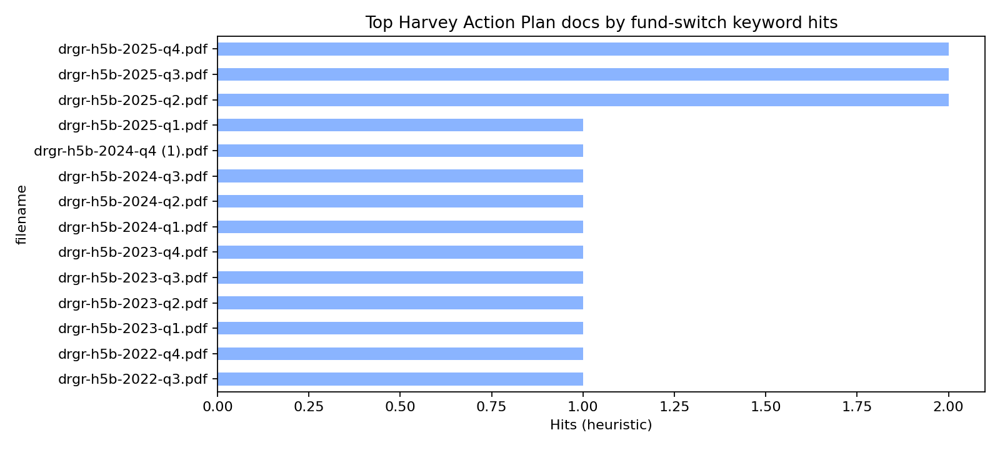
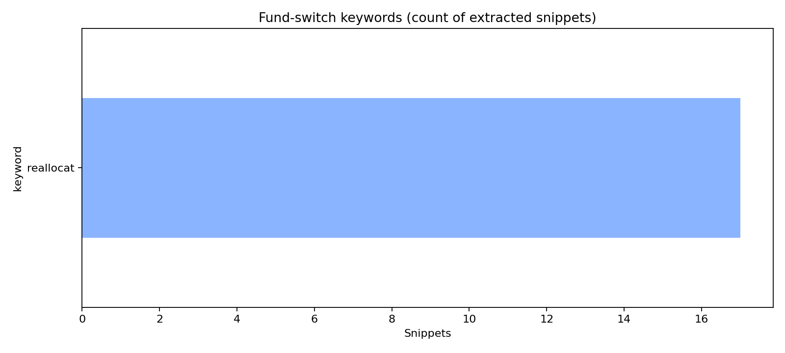
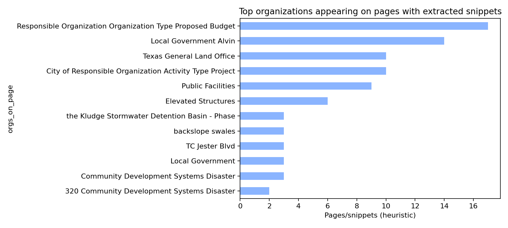
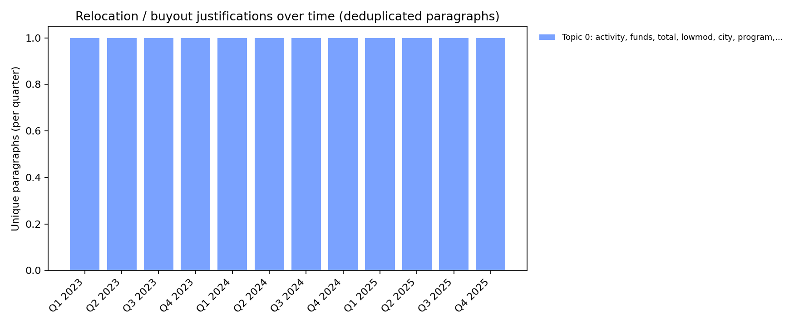

How to use
Start with the table below (high/medium confidence), then open the CSV for the full list.
“Confidence” is a simple score based on from→to phrases, money-like patterns, multiple organizations on the page, and justification cue words.
Full CSV: outputs/exports/harvey_action_plan_fund_switch_statements.csv
Doc summary: outputs/exports/harvey_action_plan_fund_switch_doc_summary.csv
Summary charts
These help prioritize which PDFs to review first.



Semantic candidates (narrative paragraphs)
This section uses transformer embeddings to find paragraphs that are semantically similar to “fund switch / reallocation” seed queries.
It helps catch paraphrases that keyword scans miss, and groups near-duplicates across quarters.
Semantic candidates CSV: outputs/exports/harvey_action_plan_fund_switch_semantic_paragraph_candidates.csv
Semantic dedup groups CSV: outputs/exports/harvey_action_plan_fund_switch_semantic_dedup_groups.csv
330
Narrative paragraphs scanned (pre-filtered)
37
Top semantic matches kept (min similarity 0.30)
5
Semantic duplicate groups (cosine ≥ 0.90)
Seed queries used for ranking
- Funds were reallocated to another project or program.
- Remaining funds were reallocated into a different project.
- Unspent funds were moved to a different activity.
- Budget was reprogrammed from one activity to another.
- Funds were redirected from one program to another program.
- Funds were transferred from one organization to another organization.
- Deobligated funds were reallocated to other eligible uses.
- The project was cancelled and remaining funds were reallocated.
- Costs increased and the remaining balance was reallocated.
- Funding was shifted to another project to address an urgent need.
Embedding model: all-MiniLM-L6-v2
Top semantic duplicates (collapsed across quarters)
| Occurrences | Quarter range | Statement |
|---|---|---|
15 hits |
Q2 2022 → Q4 2025 15 PDFs • 15 quarters |
During the course of the project, rising costs and material shortages restricted the City of Alvin's ability to carry out the project scope outlined by the initial contract. The city has decided that the project is therefore unable to be completed and the remaining funds have been reallocated into the city’s sewer facilities project. Example: drgr-hh5b-2022-q2.pdf p273-273 • Latest: drgr-h5b-2025-q4.pdf p413-413 |
12 hits |
Q1 2023 → Q4 2025 12 PDFs • 12 quarters |
The City of Wharton will provide a buyout program for residential dwellings affected by Hurricane Harvey. Assistance will be provided to homeowners who are located in a floodplain or reside in a repetitive flood area and who agree to relocate to outside the floodplain or a location of reduced flood risk. These activities will meet the urgent need national objective. Unexpended funds from this activity were moved to a low/mod housing relocation assistance activity. # of Singlefamily Units # of Multifamily Units # of… Example: drgr-h5b-2023-q1.pdf p966-966 • Latest: drgr-h5b-2025-q4.pdf p1499-1499 |
4 hits |
Q1 2025 → Q4 2025 4 PDFs • 4 quarters |
Placeholder activity to transfer Program Income generated by Harris County to its annual CDBG Program. $ 0.00 Local Government Harris, County $ 0.00 State Agency Texas General Land Office Example: drgr-h5b-2025-q1.pdf p1374-1374 • Latest: drgr-h5b-2025-q4.pdf p1823-1823 |
3 hits |
Q2 2025 → Q4 2025 3 PDFs • 3 quarters |
Disaster Recovery Reallocation Program Grantee Support for Subrecipient HMID LMI Rehabilitation/reconstruction of a public improvement Activities - see "Associated Activities" for full list of activities, beneficiaries and accomplishments. Total Projected Accomplishments # of Targeted Section 3 Labor Hours # of Section 3 Labor Hours # of Total Labor Hours # cubic feet of stormwater storage added # of Elevated Structures Activity funds eligible for DREF (Ike Only) # of cable feet of public utility # of Linear miles … Example: drgr-h5b-2025-q2.pdf p1427-1427 • Latest: drgr-h5b-2025-q4.pdf p1814-1814 |
3 hits |
Q2 2025 → Q4 2025 3 PDFs • 3 quarters |
Disaster Recovery Reallocation Program Grantee Support for Subrecipient HMID LMI acquisition Activities - see "Associated Activities" for full list of activities, beneficiaries and accomplishments. # of Elevated Structures # of Substantially Rehabilitated Units # ELI Households (0-30% AMI) Activity funds eligible for DREF (Ike Only) #Units with other green #Units deconstructed #Sites re-used #Units exceeding Energy Star #Units with bus/rail access #Low flow showerheads #Low flow toilets #Units with solar panels #Di… Example: drgr-h5b-2025-q2.pdf p1429-1429 • Latest: drgr-h5b-2025-q4.pdf p1816-1816 |
Themes (topic-like clusters)
Clusters are built over the semantic candidate embeddings and labeled using top TF‑IDF terms per cluster.
Theme 1: parcels, parcels acquired, acquired, units, activity, floodplain (12 paragraphs)
score 0.357 • Q1 2023 • drgr-h5b-2023-q1.pdf p966-966
The City of Wharton will provide a buyout program for residential dwellings affected by Hurricane Harvey. Assistance will be provided to homeowners who are located in a floodplain or reside in a repetitive flood area and who agree to relocate to outside the floodplain or a location of reduced flood risk. These activities will meet the urgent need national objective. Unexpended funds from this activity were moved to a low/mod housing relocation assistance activity. # of Singlefamily Units # of Multifamily Units # of Housing Units Activity funds eligible for DREF (Ike Only) Total acquisition compensation to owners # of Parcels acquired voluntarily # of Parcels acquired by admin settlement # of…
score 0.357 • Q2 2023 • drgr-h5b-2023-q2.pdf p965-965
The City of Wharton will provide a buyout program for residential dwellings affected by Hurricane Harvey. Assistance will be provided to homeowners who are located in a floodplain or reside in a repetitive flood area and who agree to relocate to outside the floodplain or a location of reduced flood risk. These activities will meet the urgent need national objective. Unexpended funds from this activity were moved to a low/mod housing relocation assistance activity. # of Singlefamily Units # of Multifamily Units # of Housing Units Activity funds eligible for DREF (Ike Only) Total acquisition compensation to owners # of Parcels acquired voluntarily # of Parcels acquired by admin settlement # of…
score 0.357 • Q3 2023 • drgr-h5b-2023-q3.pdf p930-930
The City of Wharton will provide a buyout program for residential dwellings affected by Hurricane Harvey. Assistance will be provided to homeowners who are located in a floodplain or reside in a repetitive flood area and who agree to relocate to outside the floodplain or a location of reduced flood risk. These activities will meet the urgent need national objective. Unexpended funds from this activity were moved to a low/mod housing relocation assistance activity. # of Singlefamily Units # of Multifamily Units # of Housing Units Activity funds eligible for DREF (Ike Only) Total acquisition compensation to owners # of Parcels acquired voluntarily # of Parcels acquired by admin settlement # of…
Theme 0: project, projected, city, low mod, mod, total (10 paragraphs)
score 0.444 • Q3 2023 • drgr-h5b-2023-q3.pdf p269-269
During the course of the project, rising costs and material shortages restricted the City of Alvin's ability to carry out the project scope outlined by the initial contract. The city has decided that the project is therefore unable to be completed and the remaining funds have been reallocated into the city’s sewer facilities project. Total Low Mod Projected Beneficiaries Low/Mod% # of Persons 1 0.00 Total Projected Accomplishments # of Elevated Structures
score 0.444 • Q4 2023 • drgr-h5b-2023-q4.pdf p296-296
During the course of the project, rising costs and material shortages restricted the City of Alvin's ability to carry out the project scope outlined by the initial contract. The city has decided that the project is therefore unable to be completed and the remaining funds have been reallocated into the city’s sewer facilities project. Total Low Mod Projected Beneficiaries Low/Mod% # of Persons 1 0.00 Total Projected Accomplishments # of Elevated Structures
score 0.444 • Q1 2024 • drgr-h5b-2024-q1.pdf p294-294
During the course of the project, rising costs and material shortages restricted the City of Alvin's ability to carry out the project scope outlined by the initial contract. The city has decided that the project is therefore unable to be completed and the remaining funds have been reallocated into the city’s sewer facilities project. Total Low Mod Projected Beneficiaries Low/Mod% # of Persons 1 0.00 Total Projected Accomplishments # of Elevated Structures
Theme 4: project, city, facilities, city alvin, contract, remaining (5 paragraphs)
score 0.502 • Q2 2022 • drgr-hh5b-2022-q2.pdf p273-273
During the course of the project, rising costs and material shortages restricted the City of Alvin's ability to carry out the project scope outlined by the initial contract. The city has decided that the project is therefore unable to be completed and the remaining funds have been reallocated into the city’s sewer facilities project.
score 0.502 • Q2 2023 • drgr-h5b-2023-q2.pdf p272-272
During the course of the project, rising costs and material shortages restricted the City of Alvin's ability to carry out the project scope outlined by the initial contract. The city has decided that the project is therefore unable to be completed and the remaining funds have been reallocated into the city’s sewer facilities project.
score 0.447 • Q3 2022 • drgr-h5b-2022-q3.pdf p271-271
During the course of the project, rising costs and material shortages restricted the City of Alvin's ability to carry out the project scope outlined by the initial contract. The city has decided that the project is therefore unable to be completed and the remaining funds have been reallocated into the city’s sewer facilities project. # of Elevated Structures # of Non-business Organizations benefitting # of public facilities
Theme 2: county, harris county, harris, 00, government, activity transfer (4 paragraphs)
score 0.359 • Q1 2025 • drgr-h5b-2025-q1.pdf p1374-1374
Placeholder activity to transfer Program Income generated by Harris County to its annual CDBG Program. $ 0.00 Local Government Harris, County $ 0.00 State Agency Texas General Land Office
score 0.359 • Q2 2025 • drgr-h5b-2025-q2.pdf p1436-1436
Placeholder activity to transfer Program Income generated by Harris County to its annual CDBG Program. $ 0.00 Local Government Harris, County $ 0.00 State Agency Texas General Land Office
score 0.359 • Q3 2025 • drgr-h5b-2025-q3.pdf p1428-1428
Placeholder activity to transfer Program Income generated by Harris County to its annual CDBG Program. $ 0.00 Local Government Harris, County $ 0.00 State Agency Texas General Land Office
Theme 3: replaced, units, replaced light, fixtures, light, flow (3 paragraphs)
score 0.306 • Q3 2025 • drgr-h5b-2025-q3.pdf p1421-1421
Disaster Recovery Reallocation Program Grantee Support for Subrecipient HMID LMI acquisition Activities - see "Associated Activities" for full list of activities, beneficiaries and accomplishments. # of Elevated Structures # of Substantially Rehabilitated Units # ELI Households (0-30% AMI) Activity funds eligible for DREF (Ike Only) #Units with other green #Units deconstructed #Sites re-used #Units exceeding Energy Star #Units with bus/rail access #Low flow showerheads #Low flow toilets #Units with solar panels #Dishwashers replaced #Clothes washers replaced #Refrigerators replaced #Light fixtures (outdoors) replaced #Light Fixtures (indoors) replaced #Replaced hot water heaters #Replaced th…
score 0.306 • Q2 2025 • drgr-h5b-2025-q2.pdf p1429-1429
Disaster Recovery Reallocation Program Grantee Support for Subrecipient HMID LMI acquisition Activities - see "Associated Activities" for full list of activities, beneficiaries and accomplishments. # of Elevated Structures # of Substantially Rehabilitated Units # ELI Households (0-30% AMI) Activity funds eligible for DREF (Ike Only) #Units with other green #Units deconstructed #Sites re-used #Units exceeding Energy Star #Units with bus/rail access #Low flow showerheads #Low flow toilets #Units with solar panels #Dishwashers replaced #Clothes washers replaced #Refrigerators replaced #Light fixtures (outdoors) replaced #Light Fixtures (indoors) replaced #Replaced hot water heaters #Replaced th…
score 0.306 • Q4 2025 • drgr-h5b-2025-q4.pdf p1816-1816
Disaster Recovery Reallocation Program Grantee Support for Subrecipient HMID LMI acquisition Activities - see "Associated Activities" for full list of activities, beneficiaries and accomplishments. # of Elevated Structures # of Substantially Rehabilitated Units # ELI Households (0-30% AMI) Activity funds eligible for DREF (Ike Only) #Units with other green #Units deconstructed #Sites re-used #Units exceeding Energy Star #Units with bus/rail access #Low flow showerheads #Low flow toilets #Units with solar panels #Dishwashers replaced #Clothes washers replaced #Refrigerators replaced #Light fixtures (outdoors) replaced #Light Fixtures (indoors) replaced #Replaced hot water heaters #Replaced th…
Theme 5: public, improvement, public improvement, feet, feet public, linear (3 paragraphs)
score 0.322 • Q4 2025 • drgr-h5b-2025-q4.pdf p1814-1814
Disaster Recovery Reallocation Program Grantee Support for Subrecipient HMID LMI Rehabilitation/reconstruction of a public improvement Activities - see "Associated Activities" for full list of activities, beneficiaries and accomplishments. Total Projected Accomplishments # of Targeted Section 3 Labor Hours # of Section 3 Labor Hours # of Total Labor Hours # cubic feet of stormwater storage added # of Elevated Structures Activity funds eligible for DREF (Ike Only) # of cable feet of public utility # of Linear miles of Public Improvement # of Linear feet of Public Improvement
score 0.302 • Q2 2025 • drgr-h5b-2025-q2.pdf p1427-1427
Disaster Recovery Reallocation Program Grantee Support for Subrecipient HMID LMI Rehabilitation/reconstruction of a public improvement Activities - see "Associated Activities" for full list of activities, beneficiaries and accomplishments. # of Elevated Structures Activity funds eligible for DREF (Ike Only) # of cable feet of public utility # of Linear miles of Public Improvement # of Linear feet of Public Improvement
score 0.302 • Q3 2025 • drgr-h5b-2025-q3.pdf p1419-1419
Disaster Recovery Reallocation Program Grantee Support for Subrecipient HMID LMI Rehabilitation/reconstruction of a public improvement Activities - see "Associated Activities" for full list of activities, beneficiaries and accomplishments. # of Elevated Structures Activity funds eligible for DREF (Ike Only) # of cable feet of public utility # of Linear miles of Public Improvement # of Linear feet of Public Improvement
BERTopic (exploratory)
BERTopic is run on a semantically-ranked set of narrative paragraphs related to fund switching (seed-query similarity),
then clustered into topics. Use this to discover recurring themes and to spot additional reallocation narratives.
Topics CSV: outputs/exports/harvey_action_plan_fund_switch_bertopic_topics.csv
Paragraph assignments CSV: outputs/exports/harvey_action_plan_fund_switch_bertopic_paragraphs.csv
330
Narrative paragraphs in BERTopic pool (filtered)
32
Top semantic matches modeled
2
Topics (excluding outliers; outliers=7)
| Topic | Size | Range / top terms | Example |
|---|---|---|---|
0 |
14 move-rate 1.0 |
Q1 2023 → Q4 2025 activity, funds, total, lowmod, city, program, project, projected |
During the course of the project, rising costs and material shortages restricted the City of Alvin's ability to carry out the project scope outlined by the initial contract. The city has decided that the project is therefore unable to be completed and the remaining funds have been reallocated into the city’s sewer facilities project. Total Low Mod Projected Beneficiaries Low/Mod% # of Persons 1 0.00 Total Projected Accomplishments # of Elevated Structures |
1 |
11 move-rate 1.0 |
Q3 2022 → Q4 2025 project, city, facilities, projected, material shortages, reallocated citys, reallocated, facilities project |
During the course of the project, rising costs and material shortages restricted the City of Alvin's ability to carry out the project scope outlined by the initial contract. The city has decided that the project is therefore unable to be completed and the remaining funds have been reallocated into the city’s sewer facilities project. |
Topic details (examples)
Expand a topic to see deduplicated example paragraphs (ranked by semantic score).
Topic 0 • 14 paragraphs • move-rate 1.0
Range: Q1 2023 → Q4 2025 • Terms: activity, funds, total, lowmod, city, program, project, projected
score 0.444 • Q3 2023 • drgr-h5b-2023-q3.pdf p269-269
During the course of the project, rising costs and material shortages restricted the City of Alvin's ability to carry out the project scope outlined by the initial contract. The city has decided that the project is therefore unable to be completed and the remaining funds have been reallocated into the city’s sewer facilities project. Total Low Mod Projected Beneficiaries Low/Mod% # of Persons 1 0.00 Total Projected Accomplishments # of Elevated Structures
score 0.357 • Q1 2023 • drgr-h5b-2023-q1.pdf p966-966
The City of Wharton will provide a buyout program for residential dwellings affected by Hurricane Harvey. Assistance will be provided to homeowners who are located in a floodplain or reside in a repetitive flood area and who agree to relocate to outside the floodplain or a location of reduced flood risk. These activities will meet the urgent need national objective. Unexpended funds from this activity were moved to a low/mod housing relocation assistance activity. # of Singlefamily Units # of Multifamily Units # of Housing Units Activity funds eligible for DREF (Ike Only) Total acquisition compensation to owners # of Parcels acquired voluntarily # of Parcels acquired by admin settlement # of Parcels acquired by condemnation # of Properties
Topic 1 • 11 paragraphs • move-rate 1.0
Range: Q3 2022 → Q4 2025 • Terms: project, city, facilities, projected, material shortages, reallocated citys, reallocated, facilities project
score 0.502 • Q2 2023 • drgr-h5b-2023-q2.pdf p272-272
During the course of the project, rising costs and material shortages restricted the City of Alvin's ability to carry out the project scope outlined by the initial contract. The city has decided that the project is therefore unable to be completed and the remaining funds have been reallocated into the city’s sewer facilities project.
score 0.447 • Q3 2022 • drgr-h5b-2022-q3.pdf p271-271
During the course of the project, rising costs and material shortages restricted the City of Alvin's ability to carry out the project scope outlined by the initial contract. The city has decided that the project is therefore unable to be completed and the remaining funds have been reallocated into the city’s sewer facilities project. # of Elevated Structures # of Non-business Organizations benefitting # of public facilities
score 0.444 • Q2 2024 • drgr-h5b-2024-q2.pdf p302-302
During the course of the project, rising costs and material shortages restricted the City of Alvin's ability to carry out the project scope outlined by the initial contract. The city has decided that the project is therefore unable to be completed and the remaining funds have been reallocated into the city’s sewer facilities project. Total Low Mod Projected Beneficiaries Low/Mod% # of Persons 1 0.00 Total Projected Accomplishments # of Elevated Structures
Relocation / buyout justification timeline
This uses BERTopic clusters to summarize and trend relocation-related justifications (paragraphs mentioning relocation/buyout/floodplain).
Counts are deduplicated by normalized paragraph text to reduce repeated quarter-to-quarter boilerplate.
Timeline CSV: outputs/exports/harvey_action_plan_fund_switch_relocation_justification_timeline.csv

Quarter-by-quarter examples (deduplicated)
Q1 2023 • 1 unique paragraphs (1 total)
- drgr-h5b-2023-q1.pdf p966-966
The City of Wharton will provide a buyout program for residential dwellings affected by Hurricane Harvey. Assistance will be provided to homeowners who are located in a floodplain or reside in a repetitive flood area and who agree to relocate to outside the floodplain or a location of reduced flood risk. These activities will meet the urgent need national objective. Unexpended funds from this activity were moved to a low/mod housing relocation assistance activity. # of Singlefamily Units # of Multifamily Units #…
Q2 2023 • 1 unique paragraphs (1 total)
- drgr-h5b-2023-q2.pdf p965-965
The City of Wharton will provide a buyout program for residential dwellings affected by Hurricane Harvey. Assistance will be provided to homeowners who are located in a floodplain or reside in a repetitive flood area and who agree to relocate to outside the floodplain or a location of reduced flood risk. These activities will meet the urgent need national objective. Unexpended funds from this activity were moved to a low/mod housing relocation assistance activity. # of Singlefamily Units # of Multifamily Units #…
Q3 2023 • 1 unique paragraphs (1 total)
- drgr-h5b-2023-q3.pdf p930-930
The City of Wharton will provide a buyout program for residential dwellings affected by Hurricane Harvey. Assistance will be provided to homeowners who are located in a floodplain or reside in a repetitive flood area and who agree to relocate to outside the floodplain or a location of reduced flood risk. These activities will meet the urgent need national objective. Unexpended funds from this activity were moved to a low/mod housing relocation assistance activity. # of Singlefamily Units # of Multifamily Units #…
Q4 2023 • 1 unique paragraphs (1 total)
- drgr-h5b-2023-q4.pdf p1078-1078
The City of Wharton will provide a buyout program for residential dwellings affected by Hurricane Harvey. Assistance will be provided to homeowners who are located in a floodplain or reside in a repetitive flood area and who agree to relocate to outside the floodplain or a location of reduced flood risk. These activities will meet the urgent need national objective. Unexpended funds from this activity were moved to a low/mod housing relocation assistance activity. # of Singlefamily Units # of Multifamily Units #…
Q1 2024 • 1 unique paragraphs (1 total)
- drgr-h5b-2024-q1.pdf p1091-1091
The City of Wharton will provide a buyout program for residential dwellings affected by Hurricane Harvey. Assistance will be provided to homeowners who are located in a floodplain or reside in a repetitive flood area and who agree to relocate to outside the floodplain or a location of reduced flood risk. These activities will meet the urgent need national objective. Unexpended funds from this activity were moved to a low/mod housing relocation assistance activity. # of Singlefamily Units # of Multifamily Units #…
Q2 2024 • 1 unique paragraphs (1 total)
- drgr-h5b-2024-q2.pdf p1100-1100
The City of Wharton will provide a buyout program for residential dwellings affected by Hurricane Harvey. Assistance will be provided to homeowners who are located in a floodplain or reside in a repetitive flood area and who agree to relocate to outside the floodplain or a location of reduced flood risk. These activities will meet the urgent need national objective. Unexpended funds from this activity were moved to a low/mod housing relocation assistance activity. # of Singlefamily Units # of Multifamily Units #…
Q3 2024 • 1 unique paragraphs (1 total)
- drgr-h5b-2024-q3.pdf p1098-1098
The City of Wharton will provide a buyout program for residential dwellings affected by Hurricane Harvey. Assistance will be provided to homeowners who are located in a floodplain or reside in a repetitive flood area and who agree to relocate to outside the floodplain or a location of reduced flood risk. These activities will meet the urgent need national objective. Unexpended funds from this activity were moved to a low/mod housing relocation assistance activity. # of Singlefamily Units # of Multifamily Units #…
Q4 2024 • 1 unique paragraphs (1 total)
- drgr-h5b-2024-q4 (1).pdf p1102-1102
The City of Wharton will provide a buyout program for residential dwellings affected by Hurricane Harvey. Assistance will be provided to homeowners who are located in a floodplain or reside in a repetitive flood area and who agree to relocate to outside the floodplain or a location of reduced flood risk. These activities will meet the urgent need national objective. Unexpended funds from this activity were moved to a low/mod housing relocation assistance activity. # of Singlefamily Units # of Multifamily Units #…
Q1 2025 • 1 unique paragraphs (1 total)
- drgr-h5b-2025-q1.pdf p1115-1115
The City of Wharton will provide a buyout program for residential dwellings affected by Hurricane Harvey. Assistance will be provided to homeowners who are located in a floodplain or reside in a repetitive flood area and who agree to relocate to outside the floodplain or a location of reduced flood risk. These activities will meet the urgent need national objective. Unexpended funds from this activity were moved to a low/mod housing relocation assistance activity. # of Singlefamily Units # of Multifamily Units #…
Q2 2025 • 1 unique paragraphs (1 total)
- drgr-h5b-2025-q2.pdf p1128-1128
The City of Wharton will provide a buyout program for residential dwellings affected by Hurricane Harvey. Assistance will be provided to homeowners who are located in a floodplain or reside in a repetitive flood area and who agree to relocate to outside the floodplain or a location of reduced flood risk. These activities will meet the urgent need national objective. Unexpended funds from this activity were moved to a low/mod housing relocation assistance activity. # of Singlefamily Units # of Multifamily Units #…
Q3 2025 • 1 unique paragraphs (1 total)
- drgr-h5b-2025-q3.pdf p1131-1131
The City of Wharton will provide a buyout program for residential dwellings affected by Hurricane Harvey. Assistance will be provided to homeowners who are located in a floodplain or reside in a repetitive flood area and who agree to relocate to outside the floodplain or a location of reduced flood risk. These activities will meet the urgent need national objective. Unexpended funds from this activity were moved to a low/mod housing relocation assistance activity. # of Singlefamily Units # of Multifamily Units #…
Q4 2025 • 1 unique paragraphs (1 total)
- drgr-h5b-2025-q4.pdf p1499-1499
The City of Wharton will provide a buyout program for residential dwellings affected by Hurricane Harvey. Assistance will be provided to homeowners who are located in a floodplain or reside in a repetitive flood area and who agree to relocate to outside the floodplain or a location of reduced flood risk. These activities will meet the urgent need national objective. Unexpended funds from this activity were moved to a low/mod housing relocation assistance activity. # of Singlefamily Units # of Multifamily Units #…
Deduplicated view (unique statements)
The table below groups repeated statements across quarters/documents, so you can see which reallocation narratives persist over time.
Each row represents a “unique” statement (heuristically deduplicated from the page-level snippets).
| Occurrences | Quarter range | Statement |
|---|---|---|
14 hits |
Q3 2022 → Q4 2025 14 PDFs • 14 quarters |
Activity Description: During the course of the project, rising costs and material shortages restricted the City of Alvin's ability to carry out the project scope outlined by the initial contract. The city has decided that the project is therefore unable to be completed and the remaining funds have been reallocated into the city’s sewer facilities project. Example: drgr-h5b-2022-q3.pdf p271 • Latest: drgr-h5b-2025-q4.pdf p413 |
1 hits |
Q2 2025 → Q2 2025 1 PDFs • 1 quarters |
22 Local Government HARRIS COUNTY FLOOD CONTROL LMI%: 31. 76 Activity Supporting Documents: None Environmental Assessment: UNDERWAY Environmental Reviews: None None Activity Attributes: Project # / 0015 / Disaster Recovery Reallocation Program 1385 Community Development Systems Disaster Recovery Grant Reporting System (DRGR) Example: drgr-h5b-2025-q2.pdf p1385 • Latest: drgr-h5b-2025-q2.pdf p1385 |
1 hits |
Q3 2025 → Q3 2025 1 PDFs • 1 quarters |
22 Local Government HARRIS COUNTY FLOOD CONTROL LMI%: 31. 76 Activity Supporting Documents: None Environmental Assessment: UNDERWAY Environmental Reviews: None None Activity Attributes: Project # / 0015 / Disaster Recovery Reallocation Program 1382 Community Development Systems Disaster Recovery Grant Reporting System (DRGR) Example: drgr-h5b-2025-q3.pdf p1382 • Latest: drgr-h5b-2025-q3.pdf p1382 |
1 hits |
Q4 2025 → Q4 2025 1 PDFs • 1 quarters |
22 Local Government HARRIS COUNTY FLOOD CONTROL LMI%: 31. 76 Activity Supporting Documents: None Environmental Assessment: UNDERWAY Environmental Reviews: None None Activity Attributes: Project # / 0015 / Disaster Recovery Reallocation Program 1750 Community Development Systems Disaster Recovery Grant Reporting System (DRGR) Example: drgr-h5b-2025-q4.pdf p1750 • Latest: drgr-h5b-2025-q4.pdf p1750 |
High/medium confidence snippets (top 17)
This is the raw page-level view (repeats across quarters are expected). Use the deduplicated view above to collapse repeats.
| Confidence | Document | Snippet |
|---|---|---|
medium reallocat |
drgr-h5b-2022-q3.pdf Q3 2022 • page 271 Proposed Budgets For Organizations Carrying Out Activity |
Location Description: Construction was cancelled. Activity Description: During the course of the project, rising costs and material shortages restricted the City of Alvin's ability to carry out the project scope outlined by the initial contract. The city has decided that the project is therefore unable to be completed and the remaining funds have been reallocated into the city’s sewer facilities project. # of Elevated Structures # of Non-business Organizations benefitting # of public facilities Proposed budgets for organizations carrying out Activity: Responsible Organization Organization Type Proposed Budget $ 12,931.24 Local Government Alvin, City of LMI%: 40.04 Activity Supporting Documents: None Environmental Assessment: UNDERWAY Environmental Reviews: None None Activity Attributes: 271 Community Development Systems Disaster Recovery Grant Reporting System (DRGR) Elevated Structures; Local Government Alvin; Responsible Organization Organization Type Proposed Budget |
medium reallocat |
drgr-h5b-2022-q4.pdf Q4 2022 • page 272 LMI% |
Location Description: Construction was cancelled. Activity Description: During the course of the project, rising costs and material shortages restricted the City of Alvin's ability to carry out the project scope outlined by the initial contract. The city has decided that the project is therefore unable to be completed and the remaining funds have been reallocated into the city’s sewer facilities project. # of Elevated Structures # of Non-business Organizations benefitting # of public facilities Proposed budgets for organizations carrying out Activity: Responsible Organization Organization Type Proposed Budget $ 12,931.24 Local Government Alvin, City of LMI%: 40.04 Activity Supporting Documents: None Environmental Assessment: UNDERWAY Environmental Reviews: None None Activity Attributes: 272 Community Development Systems Disaster Recovery Grant Reporting System (DRGR) Elevated Structures; Local Government Alvin; Responsible Organization Organization Type Proposed Budget |
medium reallocat |
drgr-h5b-2023-q1.pdf Q1 2023 • page 272 Activity Attributes |
Location Description: Construction was cancelled. Activity Description: During the course of the project, rising costs and material shortages restricted the City of Alvin's ability to carry out the project scope outlined by the initial contract. The city has decided that the project is therefore unable to be completed and the remaining funds have been reallocated into the city’s sewer facilities project. # of Elevated Structures # of Non-business Organizations benefitting # of public facilities Proposed budgets for organizations carrying out Activity: Responsible Organization Organization Type Proposed Budget $ 12,931.24 Local Government Alvin, City of LMI%: 40.04 Activity Supporting Documents: None Environmental Assessment: UNDERWAY Environmental Reviews: None None Activity Attributes: 272 Community Development Systems Disaster Recovery Grant Reporting System (DRGR) Elevated Structures; Local Government Alvin; Responsible Organization Organization Type Proposed Budget |
medium reallocat |
drgr-h5b-2023-q2.pdf Q2 2023 • page 272 Location Description |
Location Description: Construction was cancelled. Activity Description: During the course of the project, rising costs and material shortages restricted the City of Alvin's ability to carry out the project scope outlined by the initial contract. The city has decided that the project is therefore unable to be completed and the remaining funds have been reallocated into the city’s sewer facilities project. Proposed budgets for organizations carrying out Activity: Responsible Organization Organization Type Proposed Budget $ 12,931.24 Local Government Alvin, City of Activity Supporting Documents: None Environmental Assessment: UNDERWAY Environmental Reviews: None None Activity Attributes: 272 Community Development Systems Disaster Recovery Grant Reporting System (DRGR) Local Government Alvin; Responsible Organization Organization Type Proposed Budget |
medium reallocat |
drgr-h5b-2023-q3.pdf Q3 2023 • page 269 Proposed Budgets For Organizations Carrying Out Activity |
Location Description: Construction was cancelled. Activity Description: During the course of the project, rising costs and material shortages restricted the City of Alvin's ability to carry out the project scope outlined by the initial contract. The city has decided that the project is therefore unable to be completed and the remaining funds have been reallocated into the city’s sewer facilities project. Total Low Mod Projected Beneficiaries Low/Mod% # of Persons 1 0.00 Total Projected Accomplishments # of Elevated Structures Proposed budgets for organizations carrying out Activity: Responsible Organization Organization Type Proposed Budget $ 12,931.24 Local Government Alvin, City of Responsible Organization Activity Type Project # Activity # Activity Title PIA Name Primary RLF Grant Number Public Facilities ty_PF 0006 facilities Hardin, County of P-17-TX-48- HIM1 Infrastructure Grantee Support for Subrecipient HMID LMI Public Facilities Activities INF_HMID_LMI_Gr anteeSupport[H5B]_ PF 0006 Rehabilitation/re construction of public facilities Texas General Land Office Y P-17-TX-48- HIM1 Activity Supporting Documents: None Environmental Assessment: UNDERWAY Environmental Reviews: Non… City of Responsible Organization Activity Type Project; Local Government Alvin; Responsible Organization Organization Type Proposed Budget; Texas General Land Office |
medium reallocat |
drgr-h5b-2023-q4.pdf Q4 2023 • page 296 Proposed Budgets For Organizations Carrying Out Activity |
Location Description: Construction was cancelled. Activity Description: During the course of the project, rising costs and material shortages restricted the City of Alvin's ability to carry out the project scope outlined by the initial contract. The city has decided that the project is therefore unable to be completed and the remaining funds have been reallocated into the city’s sewer facilities project. Total Low Mod Projected Beneficiaries Low/Mod% # of Persons 1 0.00 Total Projected Accomplishments # of Elevated Structures Proposed budgets for organizations carrying out Activity: Responsible Organization Organization Type Proposed Budget $ 12,931.24 Local Government Alvin, City of Responsible Organization Activity Type Project # Activity # Activity Title PIA Name Primary RLF Grant Number Public Facilities unty_PF 0006 facilities CALHOUN COUNTY P-17-TX-48- HIM1 Public Facilities INF_HMID_LMI_20- 065-110- C306_RefugioCount y_PF 0006 Rehabilitation/re construction of public facilities Refugio County P-17-TX-48- HIM1 Public Facilities INF_HMID_LMI_20- 065-091- C254_NuecesCount y_PF 0006 Rehabilitation/re construction of public facilities Nueces County P-17-TX-48- HIM1 Public Facilit… Public Facilities; City of Responsible Organization Activity Type Project; Local Government Alvin; Responsible Organization Organization Type Proposed Budget; Texas General Land Office |
medium reallocat |
drgr-h5b-2024-q1.pdf Q1 2024 • page 294 Proposed Budgets For Organizations Carrying Out Activity |
Location Description: Construction was cancelled. Activity Description: During the course of the project, rising costs and material shortages restricted the City of Alvin's ability to carry out the project scope outlined by the initial contract. The city has decided that the project is therefore unable to be completed and the remaining funds have been reallocated into the city’s sewer facilities project. Total Low Mod Projected Beneficiaries Low/Mod% # of Persons 1 0.00 Total Projected Accomplishments # of Elevated Structures Proposed budgets for organizations carrying out Activity: Responsible Organization Organization Type Proposed Budget $ 12,931.24 Local Government Alvin, City of Responsible Organization Activity Type Project # Activity # Activity Title PIA Name Primary RLF Grant Number Public Facilities unty_PF 0006 facilities CALHOUN COUNTY P-17-TX-48- HIM1 Public Facilities INF_HMID_LMI_20- 065-110- C306_RefugioCount y_PF 0006 Rehabilitation/re construction of public facilities Refugio County P-17-TX-48- HIM1 Public Facilities INF_HMID_LMI_20- 065-091- C254_NuecesCount y_PF 0006 Rehabilitation/re construction of public facilities Nueces County P-17-TX-48- HIM1 Public Facilit… Public Facilities; City of Responsible Organization Activity Type Project; Local Government Alvin; Responsible Organization Organization Type Proposed Budget; Texas General Land Office |
medium reallocat |
drgr-h5b-2024-q2.pdf Q2 2024 • page 302 Proposed Budgets For Organizations Carrying Out Activity |
Location Description: Construction was cancelled. Activity Description: During the course of the project, rising costs and material shortages restricted the City of Alvin's ability to carry out the project scope outlined by the initial contract. The city has decided that the project is therefore unable to be completed and the remaining funds have been reallocated into the city’s sewer facilities project. Total Low Mod Projected Beneficiaries Low/Mod% # of Persons 1 0.00 Total Projected Accomplishments # of Elevated Structures Proposed budgets for organizations carrying out Activity: Responsible Organization Organization Type Proposed Budget $ 12,931.24 Local Government Alvin, City of Responsible Organization Activity Type Project # Activity # Activity Title PIA Name Primary RLF Grant Number Public Facilities unty_PF 0006 facilities CALHOUN COUNTY P-17-TX-48- HIM1 Public Facilities INF_HMID_LMI_20- 065-110- C306_RefugioCount y_PF 0006 Rehabilitation/re construction of public facilities Refugio County P-17-TX-48- HIM1 Public Facilities INF_HMID_LMI_20- 065-091- C254_NuecesCount y_PF 0006 Rehabilitation/re construction of public facilities Nueces County P-17-TX-48- HIM1 Public Facilit… Public Facilities; City of Responsible Organization Activity Type Project; Local Government Alvin; Responsible Organization Organization Type Proposed Budget; Texas General Land Office |
medium reallocat |
drgr-h5b-2024-q3.pdf Q3 2024 • page 304 Proposed Budgets For Organizations Carrying Out Activity |
Location Description: Construction was cancelled. Activity Description: During the course of the project, rising costs and material shortages restricted the City of Alvin's ability to carry out the project scope outlined by the initial contract. The city has decided that the project is therefore unable to be completed and the remaining funds have been reallocated into the city’s sewer facilities project. Total Low Mod Projected Beneficiaries Low/Mod% # of Persons 1 0.00 Total Projected Accomplishments # of Elevated Structures Proposed budgets for organizations carrying out Activity: Responsible Organization Organization Type Proposed Budget $ 12,931.24 Local Government Alvin, City of Responsible Organization Activity Type Project # Activity # Activity Title PIA Name Primary RLF Grant Number Public Facilities unty_PF 0006 facilities CALHOUN COUNTY P-17-TX-48- HIM1 Public Facilities INF_HMID_LMI_20- 065-110- C306_RefugioCount y_PF 0006 Rehabilitation/re construction of public facilities Refugio County P-17-TX-48- HIM1 Public Facilities INF_HMID_LMI_20- 065-091- C254_NuecesCount y_PF 0006 Rehabilitation/re construction of public facilities Nueces County P-17-TX-48- HIM1 Public Facilit… Public Facilities; City of Responsible Organization Activity Type Project; Local Government Alvin; Responsible Organization Organization Type Proposed Budget; Texas General Land Office |
medium reallocat |
drgr-h5b-2024-q4 (1).pdf Q4 2024 • page 312 Proposed Budgets For Organizations Carrying Out Activity |
Location Description: Construction was cancelled. Activity Description: During the course of the project, rising costs and material shortages restricted the City of Alvin's ability to carry out the project scope outlined by the initial contract. The city has decided that the project is therefore unable to be completed and the remaining funds have been reallocated into the city’s sewer facilities project. Total Low Mod Projected Beneficiaries Low/Mod% # of Persons 1 0.00 Total Projected Accomplishments # of Elevated Structures Proposed budgets for organizations carrying out Activity: Responsible Organization Organization Type Proposed Budget $ 12,931.24 Local Government Alvin, City of Responsible Organization Activity Type Project # Activity # Activity Title PIA Name Primary RLF Grant Number Public Facilities unty_PF 0006 facilities CALHOUN COUNTY P-17-TX-48- HIM1 Public Facilities INF_HMID_LMI_20- 065-110- C306_RefugioCount y_PF 0006 Rehabilitation/re construction of public facilities Refugio County P-17-TX-48- HIM1 Public Facilities INF_HMID_LMI_20- 065-091- C254_NuecesCount y_PF 0006 Rehabilitation/re construction of public facilities Nueces County P-17-TX-48- HIM1 Public Facilit… Public Facilities; City of Responsible Organization Activity Type Project; Local Government Alvin; Responsible Organization Organization Type Proposed Budget; Texas General Land Office |
medium reallocat |
drgr-h5b-2025-q1.pdf Q1 2025 • page 319 Proposed Budgets For Organizations Carrying Out Activity |
Location Description: Construction was cancelled. Activity Description: During the course of the project, rising costs and material shortages restricted the City of Alvin's ability to carry out the project scope outlined by the initial contract. The city has decided that the project is therefore unable to be completed and the remaining funds have been reallocated into the city’s sewer facilities project. Total Low Mod Projected Beneficiaries Low/Mod% # of Persons 1 0.00 Total Projected Accomplishments # of Elevated Structures Proposed budgets for organizations carrying out Activity: Responsible Organization Organization Type Proposed Budget $ 12,931.24 Local Government Alvin, City of Responsible Organization Activity Type Project # Activity # Activity Title PIA Name Primary RLF Grant Number Public Facilities unty_PF 0006 facilities CALHOUN COUNTY P-17-TX-48- HIM1 Public Facilities INF_HMID_LMI_20- 065-110- C306_RefugioCount y_PF 0006 Rehabilitation/re construction of public facilities Refugio County P-17-TX-48- HIM1 Public Facilities INF_HMID_LMI_20- 065-091- C254_NuecesCount y_PF 0006 Rehabilitation/re construction of public facilities Nueces County P-17-TX-48- HIM1 Public Facilit… Public Facilities; City of Responsible Organization Activity Type Project; Local Government Alvin; Responsible Organization Organization Type Proposed Budget; Texas General Land Office |
medium reallocat |
drgr-h5b-2025-q2.pdf Q2 2025 • page 320 Activity Attributes |
Location Description: Construction was cancelled. Activity Description: During the course of the project, rising costs and material shortages restricted the City of Alvin's ability to carry out the project scope outlined by the initial contract. The city has decided that the project is therefore unable to be completed and the remaining funds have been reallocated into the city’s sewer facilities project. Total Low Mod Projected Beneficiaries Low/Mod% # of Persons 1 0.00 Total Projected Accomplishments # of Elevated Structures Proposed budgets for organizations carrying out Activity: Responsible Organization Organization Type Proposed Budget $ 12,931.24 Local Government Alvin, City of Responsible Organization Activity Type Project # Activity # Activity Title PIA Name Primary RLF Grant Number Public Facilities unty_PF 0006 facilities CALHOUN COUNTY P-17-TX-48- HIM1 Public Facilities INF_HMID_LMI_20- 065-110- C306_RefugioCount y_PF 0006 Rehabilitation/re construction of public facilities Refugio County P-17-TX-48- HIM1 Public Facilities INF_HMID_LMI_20- 065-091- C254_NuecesCount y_PF 0006 Rehabilitation/re construction of public facilities Nueces County P-17-TX-48- HIM1 Public Facilit… Public Facilities; 320 Community Development Systems Disaster; City of Responsible Organization Activity Type Project; Local Government Alvin; Responsible Organization Organization Type Proposed Budget; Texas General Land Office |
medium reallocat |
drgr-h5b-2025-q3.pdf Q3 2025 • page 320 Proposed Budgets For Organizations Carrying Out Activity |
Location Description: Construction was cancelled. Activity Description: During the course of the project, rising costs and material shortages restricted the City of Alvin's ability to carry out the project scope outlined by the initial contract. The city has decided that the project is therefore unable to be completed and the remaining funds have been reallocated into the city’s sewer facilities project. Total Low Mod Projected Beneficiaries Low/Mod% # of Persons 1 0.00 Total Projected Accomplishments # of Elevated Structures Proposed budgets for organizations carrying out Activity: Responsible Organization Organization Type Proposed Budget $ 12,931.24 Local Government Alvin, City of Responsible Organization Activity Type Project # Activity # Activity Title PIA Name Primary RLF Grant Number Public Facilities unty_PF 0006 facilities CALHOUN COUNTY P-17-TX-48- HIM1 Public Facilities INF_HMID_LMI_20- 065-110- C306_RefugioCount y_PF 0006 Rehabilitation/re construction of public facilities Refugio County P-17-TX-48- HIM1 Public Facilities INF_HMID_LMI_20- 065-091- C254_NuecesCount y_PF 0006 Rehabilitation/re construction of public facilities Nueces County P-17-TX-48- HIM1 Public Facilit… Public Facilities; 320 Community Development Systems Disaster; City of Responsible Organization Activity Type Project; Local Government Alvin; Responsible Organization Organization Type Proposed Budget; Texas General Land Office |
medium reallocat |
drgr-h5b-2025-q4.pdf Q4 2025 • page 413 Activity Attributes |
Location Description: Construction was cancelled. Activity Description: During the course of the project, rising costs and material shortages restricted the City of Alvin's ability to carry out the project scope outlined by the initial contract. The city has decided that the project is therefore unable to be completed and the remaining funds have been reallocated into the city’s sewer facilities project. Total Low Mod Projected Beneficiaries Low/Mod% # of Persons 1 0.00 Total Projected Accomplishments # of Elevated Structures Proposed budgets for organizations carrying out Activity: Responsible Organization Organization Type Proposed Budget $ 12,931.24 Local Government Alvin, City of Responsible Organization Activity Type Project # Activity # Activity Title PIA Name Primary RLF Grant Number Public Facilities unty_PF 0006 facilities CALHOUN COUNTY P-17-TX-48- HIM1 Public Facilities INF_HMID_LMI_20- 065-110- C306_RefugioCount y_PF 0006 Rehabilitation/re construction of public facilities Refugio County P-17-TX-48- HIM1 Public Facilities INF_HMID_LMI_20- 065-091- C254_NuecesCount y_PF 0006 Rehabilitation/re construction of public facilities Nueces County P-17-TX-48- HIM1 Public Facilit… Public Facilities; City of Responsible Organization Activity Type Project; Local Government Alvin; Responsible Organization Organization Type Proposed Budget; Texas General Land Office |
medium reallocat |
drgr-h5b-2025-q2.pdf Q2 2025 • page 1385 Location Description |
Location Description: Construction for the East TC Jester Detention Basin project shall take place in Harris County south of Cypresswood Drive and east of TC Jester Blvd. Construction for the Kludge Stormwater Detention Basin - Phase 3 shall take place in Harris County 400 ft southeast of Pierce Drive and east of the existing detention basin. Service areas for each project are distinct. Activity Description: Harris County Flood Control District shall construct a stormwater detention basin. Construction will include excavation; grading; incorporation of weirs, outfall structures, backslope swales, interceptor structures, silt fence, channel lining, pipe outfalls, headwalls, and wingwalls; installation of manholes, slope stability, and riprap; and completion of associated appurtenances for the East TC Jester Detention Basin Project. Harris County Flood Control District shall construct a stormwater detention basin. Construction will include excavation, an interceptor structures, concrete channel lining, riprap, anchored sod, cement stabilized sand, and completion of associated appurtenances for the Kluge Stormwater Detention Basin – Phase 3. These activities meet the urgent need natio… Community Development Systems Disaster; Elevated Structures; Local Government; Responsible Organization Organization Type Proposed Budget; TC Jester Blvd; backslope swales; the Kludge Stormwater Detention Basin - Phase |
medium reallocat |
drgr-h5b-2025-q3.pdf Q3 2025 • page 1382 Activity Attributes |
Location Description: Construction for the East TC Jester Detention Basin project shall take place in Harris County south of Cypresswood Drive and east of TC Jester Blvd. Construction for the Kludge Stormwater Detention Basin - Phase 3 shall take place in Harris County 400 ft southeast of Pierce Drive and east of the existing detention basin. Service areas for each project are distinct. Activity Description: Harris County Flood Control District shall construct a stormwater detention basin. Construction will include excavation; grading; incorporation of weirs, outfall structures, backslope swales, interceptor structures, silt fence, channel lining, pipe outfalls, headwalls, and wingwalls; installation of manholes, slope stability, and riprap; and completion of associated appurtenances for the East TC Jester Detention Basin Project. Harris County Flood Control District shall construct a stormwater detention basin. Construction will include excavation, an interceptor structures, concrete channel lining, riprap, anchored sod, cement stabilized sand, and completion of associated appurtenances for the Kluge Stormwater Detention Basin – Phase 3. These activities meet the urgent need natio… Community Development Systems Disaster; Elevated Structures; Local Government; Responsible Organization Organization Type Proposed Budget; TC Jester Blvd; backslope swales; the Kludge Stormwater Detention Basin - Phase |
medium reallocat |
drgr-h5b-2025-q4.pdf Q4 2025 • page 1750 LMI% |
Location Description: Construction for the East TC Jester Detention Basin project shall take place in Harris County south of Cypresswood Drive and east of TC Jester Blvd. Construction for the Kludge Stormwater Detention Basin - Phase 3 shall take place in Harris County 400 ft southeast of Pierce Drive and east of the existing detention basin. Service areas for each project are distinct. Activity Description: Harris County Flood Control District shall construct a stormwater detention basin. Construction will include excavation; grading; incorporation of weirs, outfall structures, backslope swales, interceptor structures, silt fence, channel lining, pipe outfalls, headwalls, and wingwalls; installation of manholes, slope stability, and riprap; and completion of associated appurtenances for the East TC Jester Detention Basin Project. Harris County Flood Control District shall construct a stormwater detention basin. Construction will include excavation, an interceptor structures, concrete channel lining, riprap, anchored sod, cement stabilized sand, and completion of associated appurtenances for the Kluge Stormwater Detention Basin – Phase 3. These activities meet the urgent need natio… Community Development Systems Disaster; Elevated Structures; Local Government; Responsible Organization Organization Type Proposed Budget; TC Jester Blvd; backslope swales; the Kludge Stormwater Detention Basin - Phase |
Notes / limitations
- This is keyword-driven and will miss fund switches described without those keywords.
- “From/To” extraction is a rough text pattern and may mis-parse long phrases.
- Organization matching uses ORG entities extracted by NLP; some pages may be missing ORG entities.